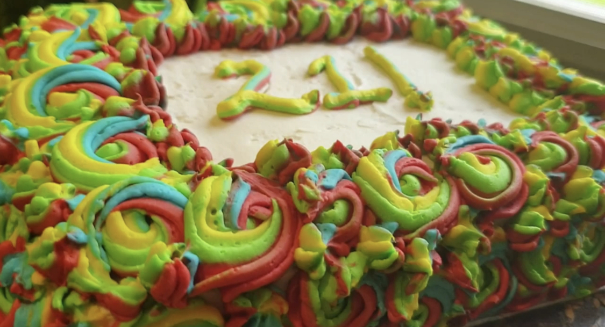
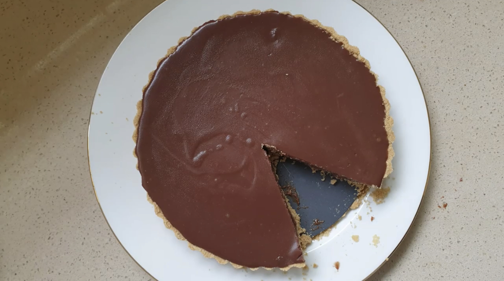
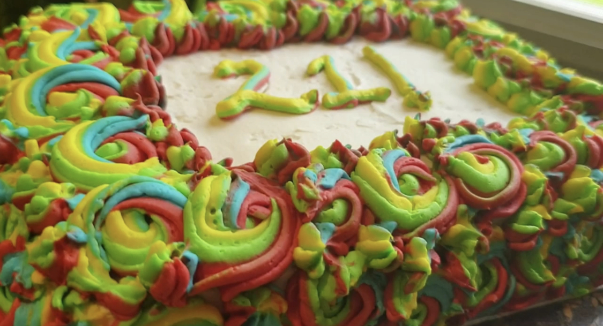
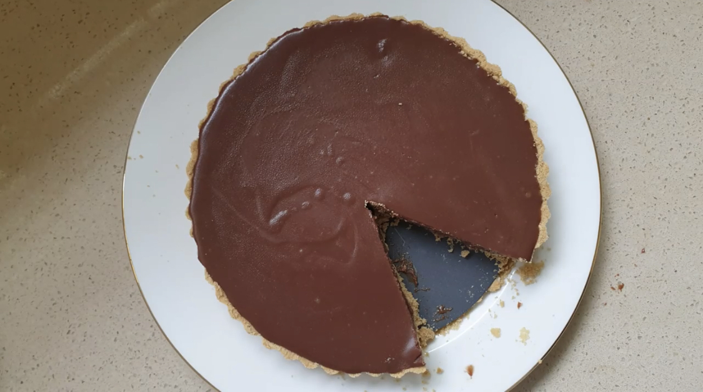

My food Journey
Hello everyone! Welcome to my page about food. I like cooking and eating in addition
to being a UX designer. On this page, I discuss why I adore baking and cooking, how this
adventure got started, Will show you some decent images of some of the items I've done so
far and my process so you can see how this has affected my life!
I've exclusively focused on cooking delicious cuisine for the past two years. I have dedicated
time to understanding the precise proportions of spices, sweetness, and other ingredients that
give food a little more flavor. But now that I know that, I'll attempt to concentrate on making
these recipes a little bit healthier. I always feel more content to eat flavorful food when there
are healthy alternatives. I intend to concentrate on modifying recipes during the next five years.
Food and I!

 



My relationship with food has been very fascinating. I had really horrible eating habits when I was a child.
It nearly seemed as though I did not enjoy eating at all. I started consuming a lot more junk food as I grew
older. Basically, all things bright and not green. Midway through high school, I became interested in baking.
Cakes and cupcakes were the beginnings. I eventually started baking custards, tarts, custards, swiss rolls,
and so forth. My appetites for sweets increased as a result of these abilities, and I eventually acquired a
sweet tooth. I learned that food may taste delicious and tasty at the same time as I learned more about it.
Both don't have to exist in isolation.
I've exclusively focused on cooking delicious cuisine for the past two years. I have dedicated
time to understanding the precise proportions of spices, sweetness, and other ingredients that
give food a little more flavor. But now that I know that, I'll attempt to concentrate on making
these recipes a little bit healthier. I always feel more content to eat flavorful food when there
are healthy alternatives. I intend to concentrate on modifying recipes during the next five years.
Some of my favrouite picks

Jane Doe
Check out recipeJane Doe
Check out recipe